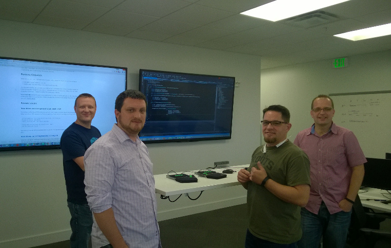

Getting the best of everyone
into all the code
Mark Pearl / @MarkPearlCoZa
About Me
blog.MarkPearl.co.zaDev Lead @ MYOB
My first experience...
Outline
What it is...
What it looks like...
The roles and mechanics
Common questions
Some things we have learnt
|
The value of another's experience is to give us hope, not to tell us how or whether to proceed |
Mob Programming is...
When three or more people work together to solve a problem
at one computer!
- it's being done all over the world -
What are the roles?
- The typist
- The rest of the mob
The typist
- Press keys
- Trust the mob
- Work with incomplete understanding
The rest of the mob
- Contribute to discovering what the next thing is to solving the problem
- When directing the typist, talk in the highest level of abstraction that the typist understands
Protocol for working with each other
|
Treat people with kindness, consideration & respect |
|
- it's a work in progress - best book I've ever written! - buy it now! |
The Productivity Question
|
Managers who don't know how to measure what they want settle for wanting what they can
measure |

|
Transformation comes more from pursuing profound questions than seeking profound
answers |
What destroys productivity?
- Incomplete information / Waiting for information
- Defects in production
- Incomplete understanding
- Being blocked
- Technical debt
- Code cruft
- Thrashing
- Multi tasking
- Meetings
- Doing more than you need to
- etc.
Waiting for information
If you are not able to answer our own questions, then we are missing someone in the mob
A question of quality
We get the best of everyone into all the code
Isn't this just pair programming?
Less confrontational
More flow
Some things we have learnt
Ergonomics & working environment matter
Ideal size is 4-5 people
Some people may feel exposed